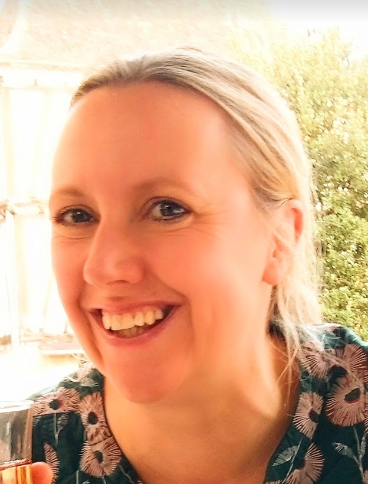

WHO AM I?
- An experienced policy professional specialising in gender, equalities and public health policy
- A highly motivated self-starter, committed to developing a new career in coding and software development
- A logical thinker who works systematically, relishing the challenge of looking for meaning in data and evidence, whether numerical or narrative
- A collaborative leader with an array of transferable skills and experience
WORK EXPERIENCE
2020 to date - Department of Health and Social Care (DHSC):
2009 to 2020 - Government Equalities Office (GEO):
Various policy roles:
2005 to 2009 - Department for Work and Pensions (DWP):
Civil service faststream roles including:
- 2021 to date: Head of Public Health Policy, team leader of two teams totalling ten people, responsible for protecting the UK population from vaccine preventable diseases and environmental health threats including climate change, air pollution, extreme weather and other hazards
- 2020-2021: Team leader of Community Health Services (CHS) policy and strategy team. During COVID, led team to ensure service and workforce resilience for CHS. Included project and risk management, with strong focus on data and metrics
2009 to 2020 - Government Equalities Office (GEO):
Various policy roles:
- Head of stakeholder engagement to support UN commitment to develop national listening platform for women
- Team leader for Hampton-Alexander Review (business-led review aimed at increasing numbers of women in FTSE350 leadership roles)
- Team leader for review of the Public Sector Equality Duty (PSED)
- Head of diversity in public and political life
2005 to 2009 - Department for Work and Pensions (DWP):
Civil service faststream roles including:
- Private secretary for Minister for Yorkshire and the Humber
- Pensions policy presentation lead
- Lead for DWP Capability Review
- Policy lead for disability strategy
EDUCATION
Coding and technical:
- 2022-2023 Hyperion Dev: Four month software engineering bootcamp
- 2023 Code First Girls: Web development MOOC, (html, CSS and Javascript, including team work to build a website), Git and Github MOOC, Javascript Kickstarter
Broader academic background:
- 2004-2005 University of Warwick: MA Interdisciplinary Gender Studies (distinction)
- 1999-2001 Merton College, Oxford University: BA Modern Languages (2:1)
ABOUT ME

Civil servant, coder, and aspiring software engineer
TECHNICAL SKILLS
TRANSFERABLE SKILLS
- Problem solving and logical thinking
- Comfortable handling data, evidence and metrics
- Attention to detail, logical and systematic
- Strong stakeholder engagement skills
- Collaborative working style
- Positive and proactive attitude
- Passionate about diversity and inclusion
- Strong team player and leader